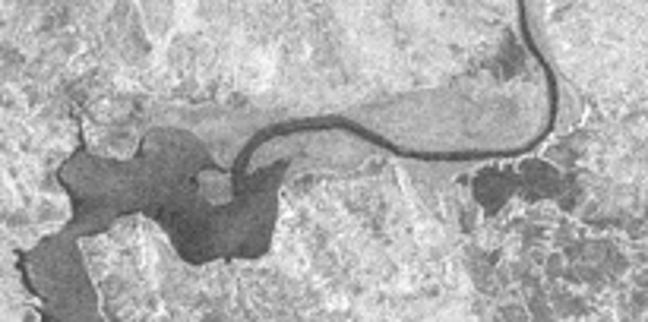
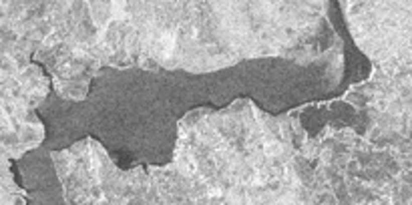

Drag across two NISAR radar passes to see where the reservoir’s northeastern arm narrowed.
Preliminary net open-water loss in the northeastern arm study window.


Drag the divider or use the arrow keys.
Both scenes use the same brightness scale. We smoothed the images and tested five radar-brightness thresholds within a manually drawn reservoir boundary. The range represents sensitivity to the threshold. Independent validation against optical imagery is pending. The overlay shows where estimated open water was lost.